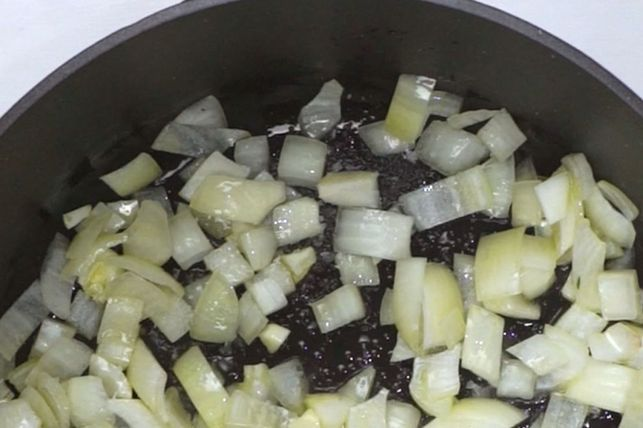
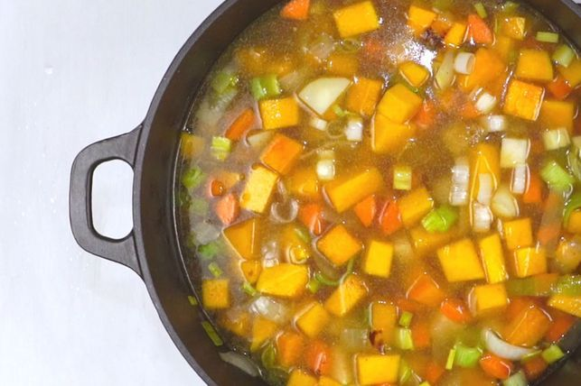

The beauty of a creamy pumpkin soup (and this classic pumpkin soup recipe in particular) is that it’s so versatile and forgiving. It’s one of the easiest meals to make with just a handful of ingredients, and it’s almost impossible to mess up. We love easy soup recipes, and know our community of home cooks do too.
Heat oil in a large saucepan over low heat, add onion and leek and cook for 2-3 minutes, until softened but not coloured.
Add garlic, coriander, cumin, and nutmeg and cook, stirring, for 30 seconds. Add pumpkin, potato and stock and bring to the boil. Turn heat to low, cover and simmer for 30 minutes. Allow to cool slightly, then blend in batches.
Return soup to pan, stir through cream and reheat gently. Season and add a little more nutmeg if desired.